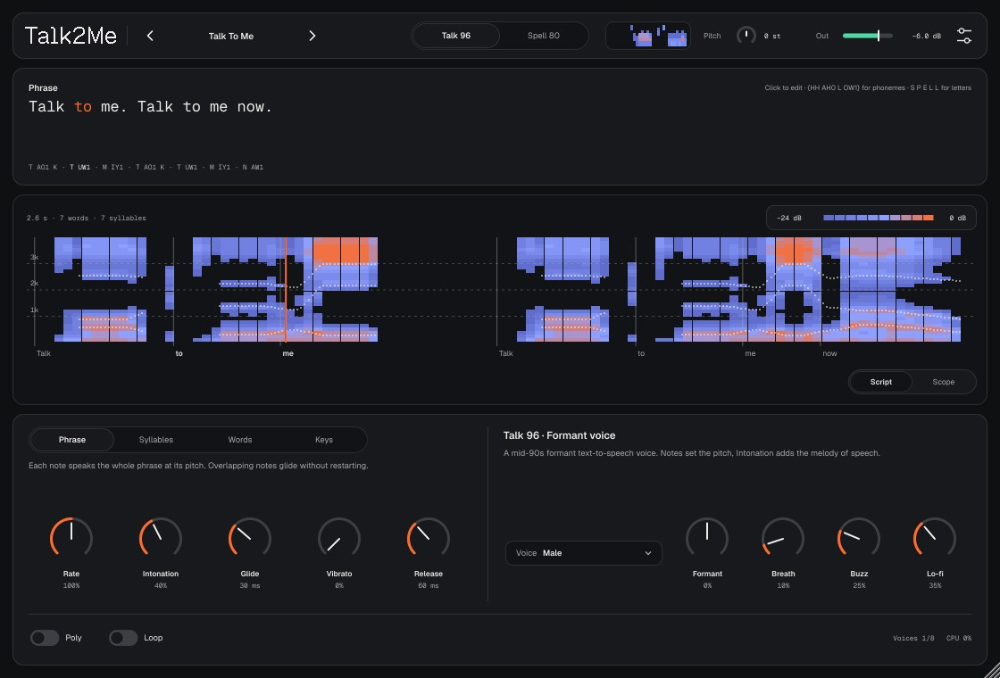
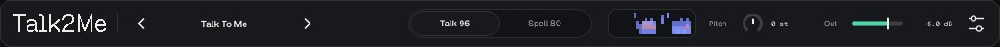
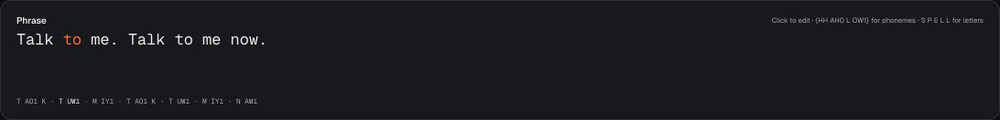
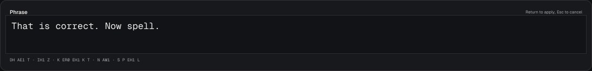
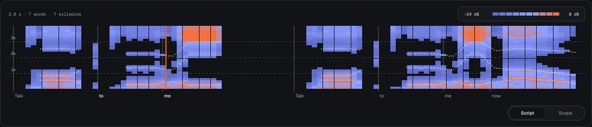
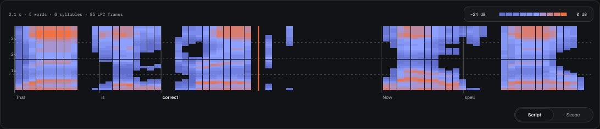
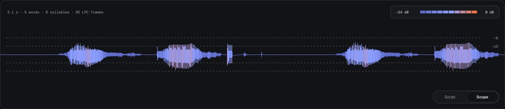
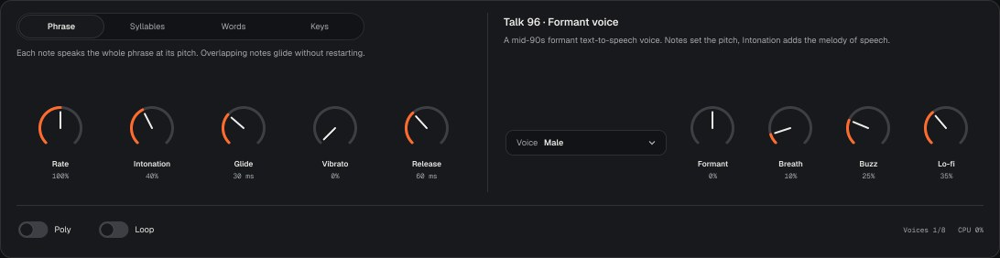
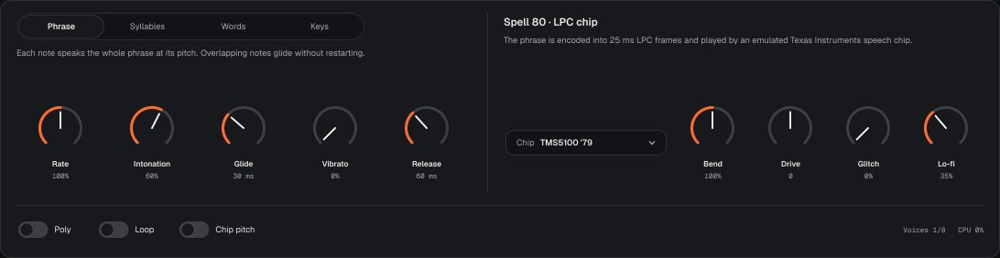
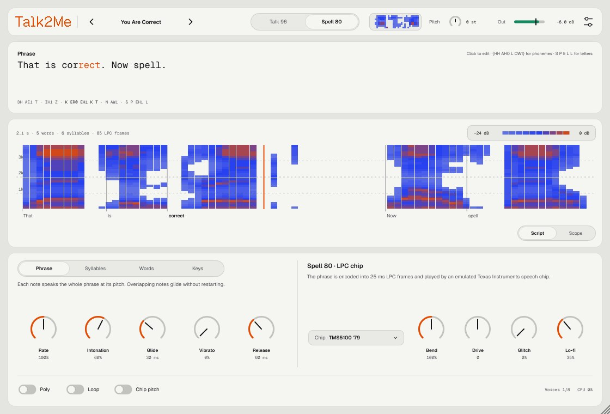

Talk2Me — синтезатор речи, который поёт по нотам. Пишете фразу, играете на клавишах — голос произносит её на высоте нажатой ноты.
Это как talkbox, только вместо рта — синтез речи из прошлого. Два движка звучат по-разному:
Нужен Mac с macOS 11 или новее. Плагин не подписан сертификатом Apple, поэтому ставится скриптом, который снимает карантин.
Нужен установленный gh (GitHub CLI). Команда скачивает последний релиз, распаковывает и устанавливает:
cd ~/Downloads && rm -rf Talk2Me-macOS Talk2Me-macOS.zip && gh release download -R controloptioncommand/Talk2me -p Talk2Me-macOS.zip && unzip -q Talk2Me-macOS.zip -d Talk2Me-macOS && bash Talk2Me-macOS/install-mac.sh
bash ~/Downloads/Talk2Me-macOS/install-mac.sh. Скрипт кладёт Talk2Me.vst3 и Talk2Me.component в ~/Library/Audio/Plug-Ins.В архиве есть папка demo с примерами звучания. Обновление — та же команда: новая версия заменит старую, проекты и пресеты не трогаются.
hello world. Звук меняется сразу, пока печатаете. Return — готово.| Зона | Что там |
|---|---|
| Тулбар | Логотип (клик — страница About), пресет ‹ имя ›, движок Talk 96 / Spell 80, мини-спектрограмма, Pitch, Out, настройки. |
| Фраза | Текст, который произносит голос. Звучащий слог подсвечен, под текстом — фонемы. |
| Главный вид | Script — «партитура» фразы с курсорами нот, Scope — волна на выходе. |
| Панель | Слева режим игры и ручки исполнения, справа ручки выбранного движка. |
| Подвал | Poly, Loop, Chip pitch, счётчики Voices и CPU. |


Клик по фразе (или Return, когда она в фокусе) — правка на месте. Звук меняется сразу, пока печатаете. Return — готово, Esc — вернуть как было. Длина — до 2000 символов.

| Пишете | Что получится |
|---|---|
| Английский текст | Произношение по словарю CMUdict. Незнакомое слово — от знакомой основы с окончанием (-s, -ed, -ing, -er, -ly, 's), иначе по правилам чтения. |
, ; :, перевод строки | Короткая пауза. |
. ! | Длинная пауза и конец интонационной фразы. |
? | Длинная пауза, тон в конце поднимается. |
42, 1996 | Числа словами (forty two), четырёхзначные годы — как годы (nineteen ninety six). Длинные числа и числа с нулём впереди — по цифрам. |
S P E L L | Одиночная заглавная буква — название буквы. Исключение — I (местоимение). |
{HH AH0 L OW1} | Фонемы вручную в обозначениях ARPAbet, как в CMUdict. Цифра после гласной — ударение: 1 главное, 2 второстепенное, 0 без ударения. |
Гласные: AA (father) AE (cat) AH (cut) AO (law) AW (cow) AY (my) EH (bed) ER (bird) EY (say) IH (sit) IY (see) OW (go) OY (boy) UH (book) UW (food)
Согласные: B CH D DH (this) F G HH JH (jam) K L M N NG (sing) P R S SH T TH (thin) V W Y Z ZH (vision)

Script — «партитура» фразы. По горизонтали время всей фразы, по вертикали частота 0–4 kHz. Квадраты — огибающая спектра по кадрам 25 ms, цвет по громкости от −24 до 0 dB. Под ней слова, оранжевые линии — звучащие ноты (у каждой ноты в Poly — своя). Слева сверху — длительность фразы, число слов, слогов и кадров LPC.


Переключение — вкладки снизу справа или стрелки ← → (когда вид в фокусе).
Переключатель над ручками слева. Под ним — короткое описание выбранного режима.
| Режим | Что делает нота |
|---|---|
| Phrase | Произносит всю фразу с начала. В моно, пока держится нота, следующая нажатая меняет только высоту (с Glide) — фраза не начинается заново. Так мелодия «едет» по словам, как talkbox. Отпустили все клавиши — затухание Release. Loop — фраза повторяется, пока нота нажата. |
| Syllables | Каждая нота — следующий слог. Пока клавиша нажата, тянется гласная слога. Отпустили — слог договаривается до конца (конечные согласные). После последнего слога — снова первый. |
| Words | То же, но по словам: тянется ударная гласная слова. |
| Keys | C3 (нота 60) — первое слово фразы, C#3 — второе и так далее по кругу, ниже C3 — с конца. Высота голоса постоянная: A2 (110 Hz) плюс Pitch. |

| Ручка | Диапазон | Что делает |
|---|---|---|
| Rate | 25–300%, 100% | Темп речи. |
| Intonation | 0–100%, 40% | Мелодия речи поверх ноты: понижение к концу фразы, подъём на ударных слогах, спад в конце или подъём на «?». 0 — голос ровно на ноте. |
| Glide | 0–1000 ms, 30 ms | Скольжение высоты к новой ноте. |
| Vibrato | 0–100%, 0 | Вибрато 5.5 Hz, до 0.6 полутона, вступает через 0.25 с после начала ноты. Колесо модуляции добавляет к нему. |
| Release | 5–2000 ms, 60 ms | Затухание после отпускания (Phrase). В конце фразы и слога — короткое затухание 10 ms. |
Формантный голос середины 90-х: глоттальный импульс через каскад резонаторов, шумы — через параллельные полосы.
Внутренняя частота 11 025 Hz — отсюда «телефонный» верх. Высоту задаёт нота, Intonation добавляет мелодию речи.
| Ручка | Диапазон | Что делает |
|---|---|---|
| Voice | 5 голосов | Male, Female, Child — высота формант, форма импульса, дыхание. Robot — острый импульс. Whisper — без голоса, один шёпот. |
| Formant | −50…+50%, 0 | Сдвиг всех формант: −50% — ×0.71 (больше, ниже), +50% — ×1.41 (меньше, выше). |
| Breath | 0–100%, 10% | Шум дыхания в голосе. |
| Buzz | 0–100%, 25% | От мягкого импульса к острому щелчку — звук становится более «компьютерным». |
| Lo-fi | 0–100%, 35% | Разрядность 16 → 8 бит и ступеньки 11 кГц без сглаживания. |

Эмуляция чипа синтеза речи Texas Instruments — того, что стоит в Speak & Spell.
Фраза озвучивается формантным голосом на 8 kHz, кодируется в кадры LPC по 25 ms (предыскажение, анализ 10-го порядка, квантование по таблицам чипа) и играется эмуляцией чипа: интерполяция параметров по 8 подкадрам, chirp-импульс или шум, 10-звенный решётчатый фильтр в целых числах, 8-битный ЦАП с ограничением. Так TI готовила слова для ПЗУ игрушки. Высоту задаёт нота.
| Ручка | Диапазон | Что делает |
|---|---|---|
| Chip | 3 чипа | TMS5100 '79 — первый Speak & Spell. TMC0281D '80 — поздний Speak & Spell и Compact (другая таблица громкости). TMS5220 — TI-99/4A Speech и аркадные автоматы (другие коэффициенты и импульс). |
| Bend | 50–200%, 100% | Такт чипа, как при circuit bending: темп речи и форманты меняются вместе, высота ноты остаётся. |
| Drive | −4…+4, 0 | Громкость кадров ступенями ≈3 dB. Выше нуля — перегруз и ограничение в чипе. |
| Glitch | 0–100%, 0 | Случайно переворачивает биты в кадрах и прыгает по «ПЗУ» на несколько кадров — как замкнутые дорожки в игрушке. |
| Lo-fi | 0–100%, 35% | Ступеньки ЦАП 8 kHz без сглаживания. |
| Chip pitch | вкл / выкл | Высота только целым числом отсчётов периода, как у железа: на высоких нотах звук «плывёт» от строя. |
Фабричные: Talk To Me, Untrust, You Are Correct, Spell It, Counting, Bent Toy, Arcade, Robot Choir, Whisper, Child Voice, Syllable Singer, Numbers Station.
Пресет хранит фразу и все ручки. Сохранить свой: меню пресета или настройки → Save preset…. Ваши пресеты лежат в ~/Music/Talk2Me/Presets/*.t2m, в меню они ниже фабричных, стрелки ‹ › листают и их.
Фраза и ручки сохраняются в проекте Ableton. Тема и размер окна — общие для всех проектов (~/Library/Application Support/Talk2Me).

one two three four.| Вопрос | Ответ |
|---|---|
| Talk2Me не появился в Ableton | Settings → Plug-Ins: включены «Use VST3 Plug-ins» и «Use Audio Units», затем Rescan. Если не помогло, повторите установку скриптом: он снимает карантин macOS. |
| macOS пишет, что плагин повреждён | Это карантин неподписанного плагина. Запустите install-mac.sh ещё раз. |
| Нет звука | Talk2Me — инструмент: он должен стоять на MIDI-дорожке. Проверьте, что фраза не пустая и Out не на минимуме. |
| Слово читается неправильно | Напишите его фонемами: {T AH0 M EY1 T OW2}. Список фонем — в разделе 05. |
| Русский текст не произносится | Поддерживается только английский; кириллица пропускается. Русское слово можно записать английскими фонемами в фигурных скобках. |
| Каждая нота начинает фразу заново | В режиме Phrase играйте легато (следующая нота до отпускания предыдущей) и выключите Poly. |
| На высоких нотах Spell 80 звучит грубо | Так звучит чип: импульс короче периода обрезается. Выключите Chip pitch, если ноты «плывут». |
| Откроются ли старые проекты после обновления? | Да, состояние сохраняется между версиями. Если диапазон какого-то параметра меняется, это будет сказано в патчноуте. |
| Где история изменений | На странице релизов GitHub, у каждой версии свой патчноут. |
Talk2Me v1 · made by nnn · написан на C++ и JUCE 8. Таблицы чипов — из MAME (BSD-3), словарь — CMUdict (BSD), шрифты Medeo — SIL Open Font License.
Исходники и релизы: github.com/controloptioncommand/Talk2me